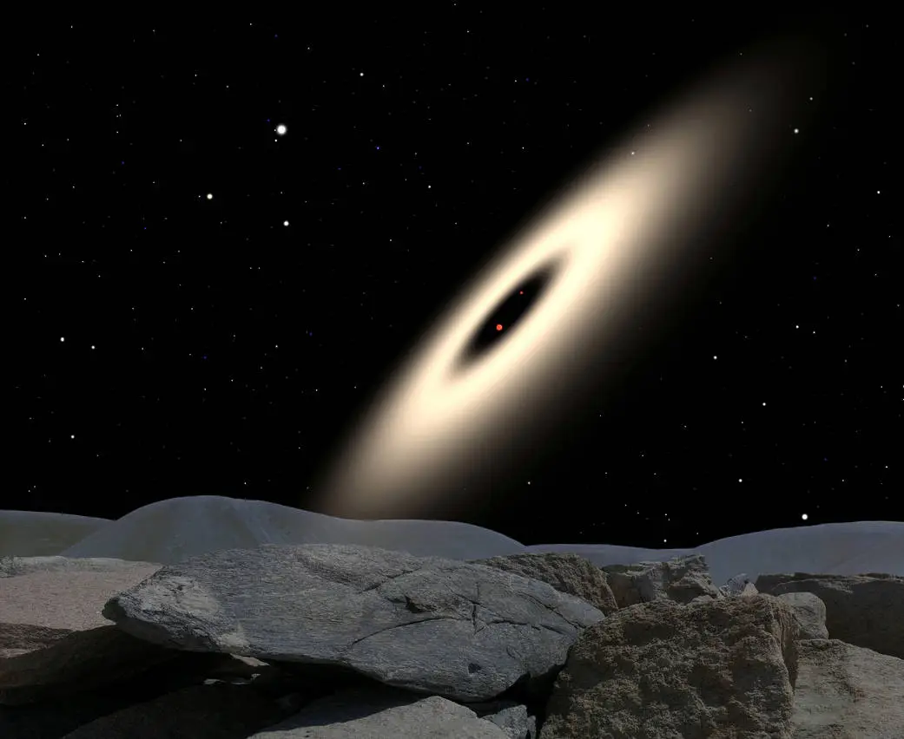
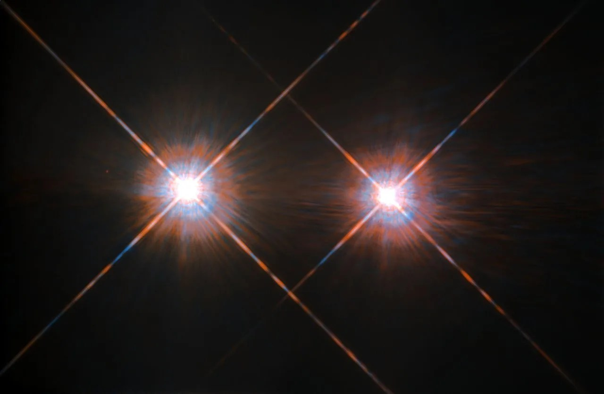
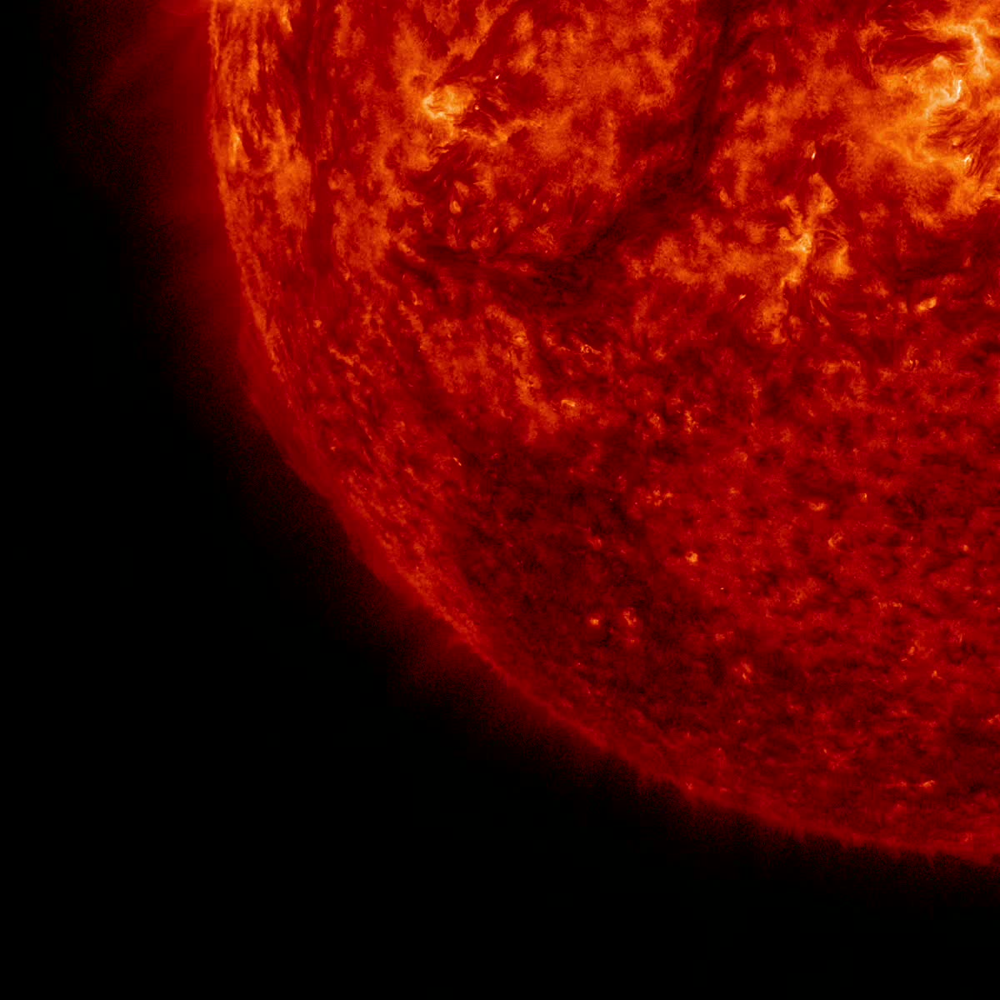
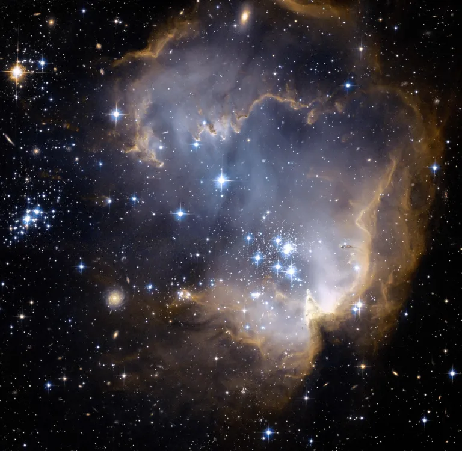

IMAGE: Protoplanetary disk around a pair of red dwarf stars. | IMAGE CREDIT: NASA
IMAGE: Alpha Centarui B (to the right) | IMAGE CREDIT: NASA/ESA
IMAGE: The Sun | IMAGE CREDIT: NASA/Solar Dynamics Observatory
IMAGE: A cluster of blue stars in the Small Magellanic Cloud. | IMAGE CREDIT: NASA
IMAGE: Protoplanetary disk around a pair of red dwarf stars. | IMAGE CREDIT: NASA
Red DwarfThe smallest main sequence star, being just a fraction of the Sun's size and mass. It's a tiny, tough, and long-lasting star.
IMAGE: Alpha Centarui B (to the right) | IMAGE CREDIT: NASA/ESA
Orange Dwarf"Goldilock Stars" known for being the stars most suitable for advanced life. The calm, just right star for life.
IMAGE: The Sun | IMAGE CREDIT: NASA/Solar Dynamics Observatory
Yellow DwarfThe Sun, stars known for being white and larger than most stars despite their name.
IMAGE: A cluster of blue stars in the Small Magellanic Cloud. | IMAGE CREDIT: NASA
Blue StarThe brightest of main sequence stars with the shortest lifespan. They burn bright, but leave in a flash.